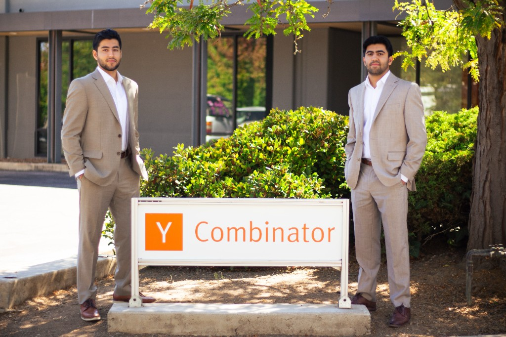

Over the next decade, the way mass tort law firms vet, qualify, and review claims will fundamentally change with AI. The process of understanding medical records, organizing claimant data, and identifying key facts will become faster, more consistent, and far more accessible to every firm.
AI will not change the heart of this work — it will enhance it. By supporting attorneys, paralegals, and review teams, it helps firms focus on strategy and advocacy rather than manual organization. The result is more accurate vetting, faster decision-making, and a stronger foundation for justice.
This transformation is already underway. The introduction of Federal Rule 16.1, along with the growing use of Plaintiff Fact Sheets and Lone Pine Orders, reflects the industry's push for earlier and more efficient vetting. Weak claims drag down strong ones — and early data clarity benefits everyone.
We built Kalinda to meet this moment. Our team of former AI researchers has worked on systems that read, structure, and analyze complex data at scale — and we're applying that expertise to mass tort law. Kalinda helps firms quickly surface the most relevant medical and factual evidence so they can make informed, defensible decisions about every claim.
We aim to be the trusted AI partner for mass tort law firms — the first call when you're facing a mountain of cases, pressed against a litigation deadline, or need to understand your inventory before leadership meetings or court submissions.
We're excited to work with you!
